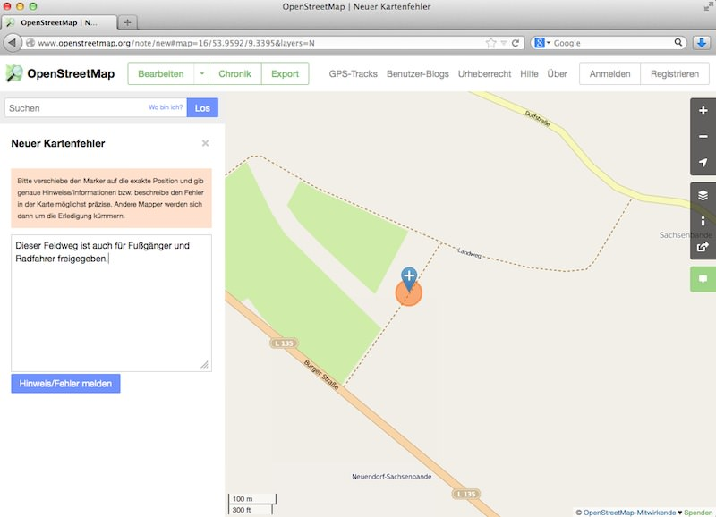
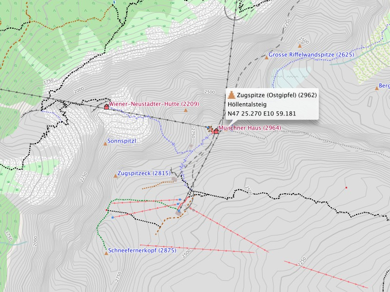

Unterstütze das Projekt finanziell:
Obolus für die Tee-/Kaffeekasse:
 Wenn du aus den Freizeitkarten etwas Positives für dich ableiten konntest, dann denke doch einmal über eine kleine Unterstützung nach. Betrachte
dies nicht als Kommerzialisierung, sondern eher wie eine Einladung zu einer "Tasse Tee und einem Stück Kuchen". Durch
deine Spende hilfst du mit dieses Projekt weiterzuführen - Spendenmöglichkeiten findest du im Impressum.
Wenn du aus den Freizeitkarten etwas Positives für dich ableiten konntest, dann denke doch einmal über eine kleine Unterstützung nach. Betrachte
dies nicht als Kommerzialisierung, sondern eher wie eine Einladung zu einer "Tasse Tee und einem Stück Kuchen". Durch
deine Spende hilfst du mit dieses Projekt weiterzuführen - Spendenmöglichkeiten findest du im Impressum.
Werde Karten-Pate:
Im Mai 2011 entstanden die ersten Skripte, mit dem Ziel eine andere, offene Karte zu erstellen. Es dauerte dann aber doch
noch bis in den September 2011 bevor die erste Freizeitkarte (Deutschland) veröffentlicht werden konnte. Es folgten weitere
Karten für Österreich, für die Schweiz, Frankreich ... Alle Freizeitkarten werden vor der Veröffentlichung intensiv durch
Kartennutzer geprüft - und so soll es auch in Zukunft sein.
Hast du Interesse "Karten-Pate" zu werden und am Projekt mitzuarbeiten?
Als Pate bist du dann einer derjenigen, der eine Länderausgabe vor der Veröffentlichung überprüft, in Foren auf Feedback zu
"deiner" Karte achtet, länderspezifische Anpassungen vorschlägt oder sogar umsetzt. Und nebenbei eine ganze Menge Spass dabei
hat, eine Geodatenbank aus Bits und Bytes in etwas umzusetzen, das Menschen im Alltag einsetzen - (d)eine Freizeitkarte.
IT-Profi musst du keiner sein - die Bereitschaft dich einzubringen ist die wichtigste Voraussetzung. Ein Bisschen was
geht immer - und wieviel dies ist, dass bestimmst alleine du selbst ...

Kartendarstellung in BaseCamp: Der tiefste Landpunkt Deutschlands (-3,54 Meter) bei Neuendorf-Sachsenbande.
Verbessere die Kartendaten selbst:
Hilf mit die OpenStreetMap-Quelldaten dieser Karte, und damit auch diese Themenkarte, zu verbessern. Fehlende oder inkorrekte Kartendaten kannst auch du auf OpenStreetMap eintragen oder korrigieren. Dies geht viel leichter als du vielleicht glaubst. Melde dich hierzu auf OpenStreetMap an und versuche es einfach mal. Alle anderen Kartennutzer können so von deinem Wissen profitieren.

Editieren der Daten mit dem Online-Editor iD. Auf einem irrtümlich nur für landwirtschaftlichen Verkehr freigegebenem Feldweg werden Fußgänger und Radfahrer erlaubt.
Melde Fehler auf der Karte:
Seit einiger Zeit gibt es auf der OSM-Webseite die Möglichkeit, Fehlermarkierungen zu setzen ohne sich registrieren zu müssen. Vergiss nicht, alle paar Wochen nach "deinen" Fehlermeldungen zu schauen - vielleicht gibt es ja Rückfragen.

Fehlermeldungen und Hinweise an die Freiwilligen können auch ohne Registrierung erstellt werden.
Fehlt dir etwas:
Falls irgend etwas anders funktioniert oder aussieht (oder gar nicht funktioniert), lass' es uns wissen. Nur so können wir den Sachverhalt prüfen und vielleicht schon mit der nächsten Kartenausgabe beheben.

Kartendarstellung in BaseCamp: Die Zugspitze - der höchste Landpunkt Deutschlands (2962 Meter).
Du hast eine Spezialkarte abgeleitet:
Optisches Darstellung:
Das optische Erscheinungsbild der Karte wird durch ein sogenanntes Typfile definiert. Du kannst, mit etwas technischem
Hintergrundwissen, das Erscheinungsbild der Karte grundlegend verändern. Sei es, weil dir "dein" Design besser gefällt, oder
du für ein spezielles GPS-Gerät Anpassungen vorgenommen hast. Stelle deine Arbeiten doch allen Nutzern zur Verfügung.
Eigene Karte:
Über die Entwicklungsumgebung der Karte ist es "leicht" möglich, aus den Freizeitkarten eigene oder spezielle Kartenvarianten
abzuleiten. Stelle deine Spezialkarten doch allen Nutzern zur Verfügung.